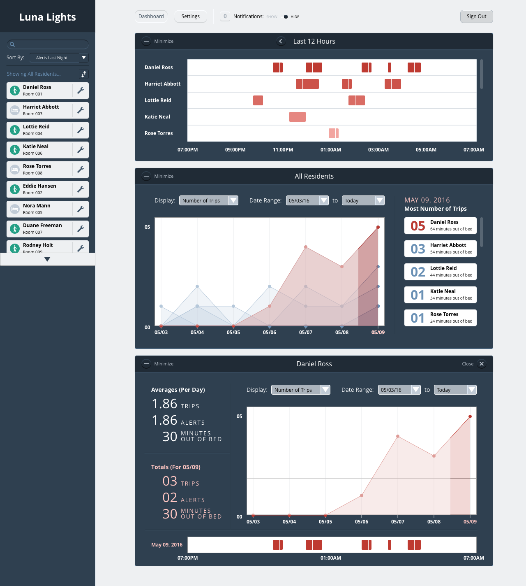
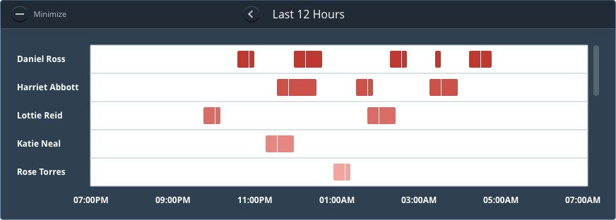
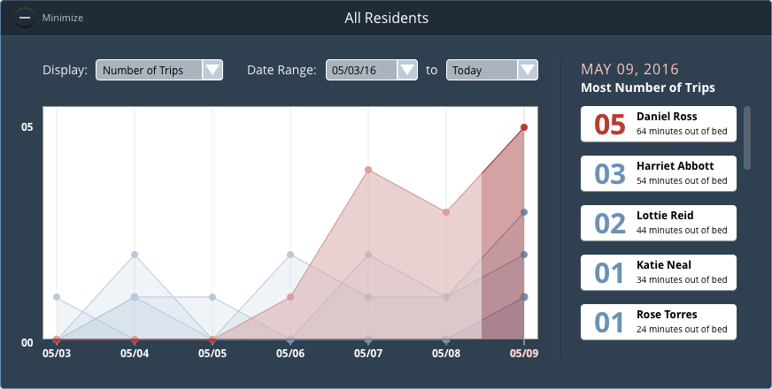

Luna Lights is an automated lighting system that utilizes cloud based data analytics to prevent and detect falls in the older adult population.
Opportunity
As part of the Startup Institute, I partnered up with Ida Doutt, John Gramilia, and Jiha Hwang to help Luna Lights design an analytics reporting tool. At the time, they were recording data on their personal backend system, but the only method of reporting was through screenshots of a third party extension. Our goal for this project was to provide a streamlined way for care providers to interact with data about their residents and further inform better care for older adults.
Ideation
After several brainstorming sessions, we decided to design for the interaction between the night time staff and the day time staff. Strong communication was present between the staff members throughout the day, but it seemed to break down during shift changes. With this in mind, we explored ways to help day time staff members to easily observe any anomalies when they first come into work.

Structure
We were all new to data visualization, so we wanted to spend time understanding how to structure graphs and information. The most useful insights came from an article by Truth Labs, which helped us create a hierarchy where urgent hourly data was at the top, a daily view of all residents came next, and any individual resident data would be presented at the bottom.
Hourly View
Their current API gave us the option to make GET requests for timestamps of when residents got in and out of bed, as well as any alerts sent to caregivers the night before. (Alerts are sent when residents are out of bed for a predetermined amount of time.) After several iterations, we determined the best way to display this data was in the form of something similiar to a gannt chart.
Daily View
While iterating on the daily view, I saw myself repeating processes and looked for ways to design a better flow for creating prototypes. Using Sketch's new nested symbols feature, I worked on a system of symbols and styles that represented each state the view could be. I then exported it out to a Dropbox folder and synced it up with an Invision prototype to see if the interactions made sense. This gave us more time to test any assumptions we had and iterate further.
Resident View
After a user found a resident they wanted to investigate further, they could navigate to a card with individual hourly, daily, and numbers. The resident view placed precendent in the line graph and hard numbers over the urgent hourly view. This gave the day time staff a means for more thoughtful interactions of long-term trends for individual residents.
Final Mockup
After a month of experimenting with processes and designs, we came up with this final mockup. At first, data visualization was a tricky UI challenge that seemed too overwhelming to tackle and we did not know where to start. But as time went on, each challenge became a little more clear. We did not have time to implement the designs as code, but it was a strong exercise in understanding design tools and workflows.
  {kind=link}